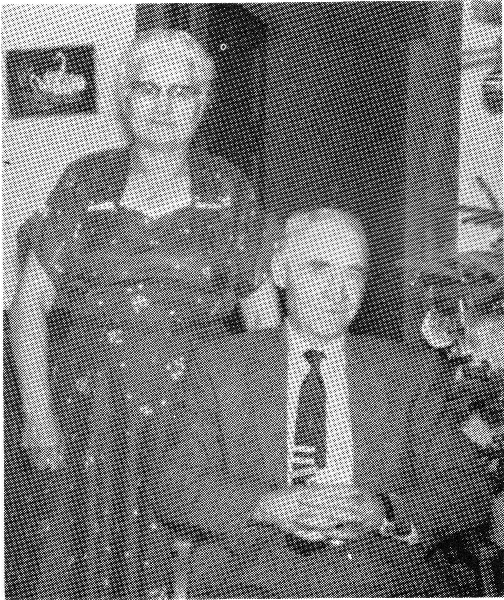

MARIE-LOUISE (L'HEUREUX) LaCLARE
On September 3, 1893, twin girls were born to Moise and Sophie, and they were named Marie-Louise and Mathilda. They were born and raised in Bresaylor, later moving to Jackfish Lake. As a young lady, Marie-Louise was employed in Joe Dart's store in Meota. On June 5, 1917, she married George (Howard) LaClare in JackFish. The marriage was performed by Father Cochin. They made their home on a farm in the Vawn district. They were very well known for their hospitality and warmth. Many travellers were made welcome in cases of emergency and during the hungry thirties, many poor sods were made welcome and none ever left with an "empty" stomach.

Marie-Louise and Howard had a family of four boys and four girls. She was a devoted wife and mother, as well as an ardent worker. She always enjoyed a good game of bridge or cribbage.
Marie-Louise spent many hours salvaging and repairing hand-me-downs. She was very adept at remaking clothing for the children as they grew up. Of course most of her ingenuity was born of necessity, as money was very scarce, as we remember it. (Even the nickels were small in those days). We remember part of Mom's ingenuity included using the tanned hides from cats, cut into thin strips and used as shoe laces.
We also remember the number of evenings that were spent cleaning, washing and carding wool which was later spun into yarn and dyed suitable colors for children's mitts, socks, toques, scarves, sweaters and every type of garment necessary to keep the family warm and comfortable in those cold winter days.
There were various and diverse skills and crafts learned by the family members during the winter evenings. We had no radio or T.V. in those days. Among the crafts learned were knitting, crocheting, embroidery, hooked and braided rugs. Each one of us had to take part in these activities, according to our age and skill. We are certain that mother learned these skills from her mother. Sophie L'Heureux. We can remember that our grandmother would spend parts of the winter with us and of the amazement we children had on seeing her skill and dexterity with the spinning wheel. She would spend many hours knitting, making sure that her sons and son-in-law were the proud owners of "lumber socks". In later years, she even knitted long hockey socks for her grandchildren.
All our evenings were not spent doing "chores". Many evenings were spent playing cards, singing, and listening to "souvenirs" of Mother's childhood. We remember the story of when Mother and Aunt Mathilda were home, alone, when a sow gave birth and the two girls pinned the piglets to the clothes line by their tiny ears, so the poor piglets could dry off.
Mother also entertained us with some of her musical skills, "button" accordian, organ, piano and mouth organ. There are many memories to cherish today, thanks to our dear Mother. We often recount those which stand out most vivdly in our minds, repeating the stories to our children and grandchildren.
As the forties approached, times became better and they enjoyed the prosperity of the times along with changing farming methods to keep up with the pace of the time. Without any doubt, Marie-Louise was quite determined that each of her children would grow up to be a well rounded citizen of the community. She insured this by her example of hard work, honesty, devotion and perserverence. As the boys grew up, they were gradually trained to assume the responsibilities of future farmers. The girls had the most complete training to become housewives.
As Marie-Louise and Howard approached mid-sixties, thought had to be given to retirement, a decision which they reluctantly accepted. Fortunately, they were able to enjoy many years in their retirement home, in North Battleford. They always welcomed visits from their children, grandchildren and many friends.
Howard LaClare passed away in 1965 and was laid to rest in the Jackfish cemetary. Marie-Louise remained in her little home for another 16 years. She took great pride in her garden fruit trees, and flowers. In July of 1980, Mother and her brother, Uncle Joe, were honored when they were chosen as the King and Queen of the Centennial Celebration in Meota. Mother and Uncle Joe were part of the pioneers to the area, as well as being the oldest pioneers in the district at the time of the celebration.
When time came that she was unable to care for herself, Marie-Louise became a resident of the Villa Pascal. This was in November of 1981. She continued to enjoy the visits of friends and relatives. Mother remained at the Villa Pascal until the time of her death, on January 5, 1985. She was laid to rest beside her husband, in the Jackfish cemetary. She was survived by seven children, sixty-four granchildren and numerous great-grandchildren.
We are forever grateful for the legacy which our parents have left us, and we in turn, hope to pass this legacy on to our children.
Marie Louise L'Heureux LaClare
| NAME | BORN | MARRIED | SPOUSE | BOY | GIRL | DIED |
|---|---|---|---|---|---|---|
| Marie Louise | Sept. 3, 1893 | June 5, 1917 | George LaClare | 4 | 4 | Jan. 5, 1985 |
| George | Sept. 27, 1965 | |||||
| MARIE LOUISE'S FAMILY | ||||||
| Leopold | May 4, 1918 | Aug. 19, 1940 | Jeannette LePage | 1 | 6 | |
| Mabel | Aug. 22, 1919 | Sept. 22, 1941 | Joseph Bru | 3 | 7 | |
| Gilbert | Jan. 18, 1922 | Sept. 30, 1947 | Marie Regnier | 5 | 4 | Apr. 10, 1980 |
| Pauline | Dec. 24, 1923 | Dec. 27, 1943 | Benoit Cadrin | 4 | 5 | |
| Phyllis | Dec. 24, 1923 | Sept. 30, 1947 | Alban Deschamps | 1 | 8 | |
| Marie | Mar. 13, 1925 | Oct. 30, 1944 | Alphonse Jullion | 1 | 7 | |
| Alphonse | Apr. , 1973 | |||||
| Remarried | July 31, 1982 | Jules Liebaert | ||||
| Walter | Dec. 21, 1927 | Oct. 18, 1949 | Betty Palestine | 5 | 1 | |
| Clarence | Sept. 29, 1929 | Apr. 4, 1951 | Cecile Morin | 4 | 2 | |
| Marie Louise's Grandchildren | ||||||
| LEOPOLD'S FAMILY | ||||||
| Therese | July 1, 1941 | 1 | 0 | |||
| Leopold | Mar. 25, 1943 | Dec. 31, 1966 | Louise Guindon | 2 | 0 | |
| Camille | Mar. 11, 1944 | , 1964 | John Sydorko | 2 | 0 | |
| Bernice | Dec. 16, 1945 | , 1965 | Ryan Walker | 1 | 0 | |
| Vivianne | Nov. 30, 1948 | , 1972 | Harold Stoneham | 1 | 1 | |
| Marie-Paul | Nov. 14, 1951 | , 1981 | George Taplin | 2 | 0 | |
| Nicolette | Nov. 1, 1955 | , 1980 | David Hrynick | 0 | 1 | |
| Marie Louise's Great Grandchildren | ||||||
| Leopold's Grandchildren | ||||||
| THERESE'S FAMILY | ||||||
| Mark | ||||||
| LEOPOLD'S FAMILY | ||||||
| Louis | ||||||
| Sebastien | ||||||
| CAMILLE'S FAMILY | ||||||
| Darren | ||||||
| Craig | ||||||
| BERNICE'S FAMILY | ||||||
| William | ||||||
| VIVIANNE'S FAMILY | ||||||
| Christopher | ||||||
| Julie | ||||||
| MARIE-PAUL'S FAMILY | ||||||
| Adam | ||||||
| Matthew | ||||||
| NICOLETTE'S FAMILY | ||||||
| Michelle | ||||||
| Marie Louise's Grandchildren | ||||||
| MABEL'S FAMILY | ||||||
| Clemence | June 19, 1942 | July 10, 1965 | Gerald McGrath | 1 | 1 | |
| Bernadette | May 10, 1943 | July 9, 1966 | Elvin Nelson | 1 | 1 | |
| Claude | June 6, 1944 | July 29, 1967 | Jacqueline Magne | 2 | 0 | |
| Bernard | June 26, 1946 | June 5, 1971 | Diane Prafke | 1 | 1 | |
| Madeleine | July 26, 1950 | May 10, 1975 | Garry Colbow | 1 | 1 | |
| Louise | July 26, 1950 | July 3, 1971 | Roger de Montarnal | 2 | 0 | |
| Jacqueline | Mar. 3, 1953 | May 11, 1974 | Gordon Hagen | 0 | 3 | |
| Gisele | June 21, 1955 | Aug. 31, 1974 | Bernard Blais | 1 | 1 | |
| Henri | Nov. 27, 1958 | June 21, 1980 | Linda Tkatchuk | 1 | 1 | |
| Irene | July 14, 1961 | Aug. 11, 1984 | Douglas Osborn | 0 | 0 | |
| Marie Louise's Great Grandchildren | ||||||
| Mabel's Grandchildren | ||||||
| CLEMENCE'S FAMILY | ||||||
| Shelly | Dec. 14, 1966 | |||||
| Kimberly | Feb. 19, 1969 | |||||
| BERNADETTE'S FAMILY | ||||||
| Leanne | Apr. 2, 1967 | |||||
| Gregory | Sept. 21, 1968 | |||||
| CLAUDE'S FAMILY | ||||||
| Jean Guy | Apr. 25, 1968 | |||||
| Michael | Jan. 10, 1973 | |||||
| BERNARD'S FAMILY | ||||||
| Kirsten | Feb. 3, 1972 | |||||
| Kelly | Sept. 8, 1976 | |||||
| MADELEINE'S FAMILY | ||||||
| Jillian | Sept. 29, 1979 | |||||
| Brent | Mar. 17, 1982 | |||||
| LOUISE'S FAMILY | ||||||
| Blair | Nov. 14, 1977 | |||||
| Robert | May 15, 1980 | |||||
| JACQUELINE'S FAMILY | ||||||
| Adrienne | July 14, 1977 | |||||
| Lisa | Oct. 4, 1979 | |||||
| Erica | Nov. 17, 1981 | |||||
| GISELE'S FAMILY | ||||||
| Ryan | Mar. 2, 1978 | |||||
| Joelle | Apr. 11, 1980 | |||||
| HENRI'S FAMILY | ||||||
| Dustin | June 4, 1982 | |||||
| Danielle | June 22, 1984 | |||||
| Marie Louise's Grandchildren | ||||||
| GILBERT'S FAMILY | ||||||
| Laurent | July 30, 1948 | July 18, 1970 | Sharon Moore | 1 | 1 | |
| Gilbert | July 12, 1950 | Nov. 2, 1974 | Dianne McCaffrey | 2 | 1 | |
| Patricia | Mar. 17, 1952 | June 16, 1973 | Henry Francois | 2 | 0 | |
| Camille | Aug. 28, 1953 | Oct. 18, 1975 | Denis Jullion | 0 | 2 | |
| Monica | May 8, 1955 | Dec. 21, 1982 | Garry Wappel | 2 | 0 | |
| Paul | Jan. 2, 1958 | June 2, 1979 | Elaine McCaffrey | 2 | 0 | |
| Paulette | Feb. 10, 1960 | Dec. 17, 1983 | Duncan MacRae | 1 | ||
| Bernard | July 1, 1962 | |||||
| Denis | Aug. 13, 1965 | |||||
| Marie Louise's Great Grandchildren | ||||||
| Gilbert's Grandchildren | ||||||
| LAURENT'S FAMILY | ||||||
| Shane | Oct. 29, 1971 | |||||
| Nicole | Mar. 25, 1974 | |||||
| GILBERT'S FAMILY | ||||||
| Renee | Jan. 28, 1977 | |||||
| Gilbert | Jan. 26, 1981 | |||||
| Joseph | May 25, 1984 | |||||
| PATRICIA'S FAMILY | ||||||
| Aaron | Nov. 7, 1978 | |||||
| Alexis | Apr. 19, 1982 | |||||
| CAMILLE'S FAMILY | ||||||
| Amy | Jan. 24, 1980 | |||||
| Suzanne | Mar. 20, 1983 | |||||
| MONICA'S FAMILY | ||||||
| Joseph | Oct. 25, 1985 | |||||
| Caitlin | Oct. 25, 1985 | |||||
| PAUL'S FAMILY | ||||||
| Blaire | May 6, 1983 | |||||
| Fabian | Dec. , 1985 | |||||
| PAULETTE'S FAMILY | ||||||
| Geoffrey | Sept. 4, 1985 | |||||
| Marie Louise's Grandchildren | ||||||
| PAULINE'S FAMILY | ||||||
| Roland | Oct. 23, 1944 | June 9, 1970 | Jean HaHersley | 1 | 0 | |
| Claudette | Oct. 24, 1946 | July 26, 1969 | Willie Fulton | 0 | 2 | |
| Gerald | Apr. 25, 1948 | May 31, 1969 | Elaine Arsenault | 1 | 1 | |
| Denise | Aug. 27, 1950 | Sept. 5, 1981 | Doug Hearn | 0 | 0 | |
| Pierre | Feb. 17, 1954 | |||||
| Carmen | June 6, 1955 | Dec. 30, 1982 | Barry Ralston | 1 | 0 | |
| Marie | Aug. 12, 1956 | Aug. 19, 1984 | Gordon Ralston | 0 | 0 | |
| Tony | Sept. 21, 1962 | |||||
| Laura | Mar. 12, 1968 | |||||
| Marie Louise's Great Grandchildren | ||||||
| Pauline's Grandchildren | ||||||
| ROLAND'S FAMILY | ||||||
| Ian | Sept. 28, 1973 | |||||
| CLAUDETTE'S FAMILY | ||||||
| Andrea | Jan. 9, 1973 | |||||
| Nicole | July 18, 1976 | |||||
| GERALD'S FAMILY | ||||||
| Michael | Sept. 2, 1973 | |||||
| Tracey | June 28, 1977 | |||||
| CARMEN'S FAMILY | ||||||
| Toban | Mar. 3, 1986 | |||||
| Marie Louise's Grandchildren | ||||||
| PHYLLIS' FAMILY | ||||||
| Paulette | Sept. 22, 1949 | July 29, 1972 | Joel Mierau | 1 | 2 | |
| Yvonne | Nov. 26, 1950 | Dec. 11, 1971 | Arnold Somerville | 2 | 1 | |
| Claire | Jan. 11, 1952 | Aug. 11, 1973 | Earl Hanson | 3 | 0 | |
| Irene | Jan. 29, 1954 | |||||
| Marie | Oct. 29, 1957 | Oct. 1, 1977 | Creigh Reed | 1 | 1 | |
| Lorraine | Dec. 20, 1958 | Oct. 20, 1984 | David Coldron | |||
| Raymond | Sept. 28, 1962 | |||||
| Michelle | Sept. 29, 1967 | |||||
| Teri Lynne | Aug. 3, 1969 | |||||
| Marie Louise's Great Grandchildren | ||||||
| Phyllis' Grandchildren | ||||||
| PAULETTE'S FAMILY | ||||||
| Mark | Feb. 26, 1975 | |||||
| Daniel | Oct. 28, 1976 | |||||
| Denise | June 12, 1980 | |||||
| YVONNE'S FAMILY | ||||||
| Jody | Dec. 26, 1977 | |||||
| Kirk | May 22, 1979 | |||||
| Leslie | Dec. 16, 1982 | |||||
| CLAIRE'S FAMILY | ||||||
| Jason | May 12, 1979 | |||||
| Eric | June 6, 1982 | |||||
| Ian | July 19, 1985 | |||||
| MARIE'S FAMILY | ||||||
| Steven | Mar. 6, 1980 | |||||
| Maegan | May 20, 1983 | |||||
| Marie Louise's Grandchildren | ||||||
| MARIE'S FAMILY | ||||||
| Julianne | Jan. 25, 1946 | Sept. 2, 1972 | Allan Poulis | 2 | 0 | |
| Linette | July 20, 1947 | Apr. 19, 1977 | Dennis Kelly | 0 | 0 | |
| Rosemarie | Mar. 30, 1950 | |||||
| Rejeanne | Mar. 10, 1951 | |||||
| Carmelle | Aug. 6, 1953 | Oct. 28, 1972 | Pete Korby | |||
| Remarried | Aug. 10, 1985 | Terry Hadland | ||||
| Blair | Dec. 8, 1955 | Mar. 25, 1972 | ||||
| Louise | Dec. 13, 1957 | |||||
| Lisa | Sept. 26, 1962 | |||||
| Marie Louise's Great Grandchildren | ||||||
| Marie's Grandchildren | ||||||
| JULIANNE'S FAMILY | ||||||
| Jason | Mar. 29, 1972 | |||||
| Brett | Apr. 28, 1974 | |||||
| Marie Louise's Grandchildren | ||||||
| WALTER'S FAMILY | ||||||
| Danny | Aug. 21, 1950 | Nov. 18, 1972 | Verna St. Marie | 2 | 0 | |
| John | Sept. 13, 1951 | July 29, 1971 | Gloria Elliott | 2 | 0 | |
| Jeanne | Aug. 11, 1952 | Aug. 7, 1970 | Miles Ray | 0 | 1 | |
| Remarried | July 18, 1982 | Gerald Bohn | 1 | 0 | ||
| Walter | Sept. 14, 1953 | Sept. 26, 1974 | Karry Heilman | 2 | 0 | |
| William | June 22, 1955 | |||||
| George | Dec. 11, 1958 | |||||
| Marie Louise's Great Grandchildren | ||||||
| Walter's Grandchildren | ||||||
| DANNY'S FAMILY | ||||||
| Adrian | Oct. 29, 1973 | |||||
| Brent | Nov. 24, 1974 | |||||
| JOHN'S FAMILY | ||||||
| Christopher | Sept. 6, 1973 | |||||
| Elton | Apr. 19, 1975 | |||||
| JEANNE'S FAMILY | ||||||
| Michel | Feb. 20, 1971 | |||||
| Dustin | Mar. 14, 1984 | |||||
| WALTER'S FAMILY | ||||||
| Lee | July 26, 1975 | |||||
| John | Dec. 30, 1980 | |||||
| Marie Louise's Grandchildren | ||||||
| CLARENCE'S FAMILY | ||||||
| Francoise | Jan. 10, 1952 | June 30, 1983 | Evan Hepp | |||
| Donald | Apr. 19, 1953 | Sept. 19, 1980 | Lori Puckey | 1 | 3 | |
| Louis | Aug. 24, 1954 | Aug. 7, 1976 | Lois Frelich | 3 | 2 | |
| Rene | Jan. 16, 1956 | Apr. 12, 1976 | Chris Puckey | 1 | 3 | |
| Carol | Dec. 17, 1956 | |||||
| Howard | Aug. 19, 1962 | |||||
| Marie Louise's Great Grandchildren | ||||||
| Clarence's Grandchildren | ||||||
| FRANCOISE'S FAMILY | ||||||
| Troy | Feb. 22, 1971 | |||||
| DONALD'S FAMILY | ||||||
| Candace | May 6, 1981 | |||||
| Amber | May 20, 1982 | |||||
| Kristen | May 16, 1983 | |||||
| Kenyon | Dec. 20, 1984 | |||||
| LOUIS' FAMILY | ||||||
| Patrick | Aug. 11, 1975 | |||||
| Lee | Sept. 21, 1977 | |||||
| Thomas | June 23, 1981 | |||||
| Danielle | June 13, 1982 | Apr. 25, 1983 | ||||
| Angielle | June 20, 1983 | |||||
| RENE'S FAMILY | ||||||
| Carrie | July 27, 1975 | |||||
| Jeremy | May 11, 1977 | |||||
| Jodi | Sept. 5, 1978 | |||||
| Rebecca | Apr. 25, 1981 | |||||
| TOTAL DESCENDANTS | 215 |
| LIVING | 209 |
| DECEASED | 6 |